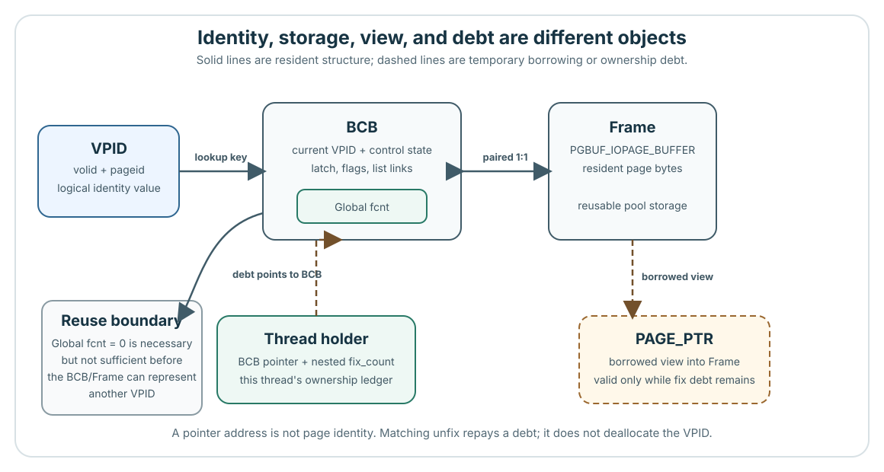

A missing page needs a safe memory slot
A database page is a block of stored data. The buffer pool keeps a limited number of pages in memory, one per slot called a frame. A page is resident while its contents occupy a frame. It is dirty when changed contents still need to be written back.
Constructed starting state: Q is the stored page that a request thread wants to read; Q is absent from the pool. Every frame is occupied. P is a resident dirty page that nobody is currently using. Its frame could make room for Q only after P's changes are preserved and current reuse checks pass.
Repeated reads favor keeping a small hot set of frequently used pages. A large scan requests many other pages, while writers leave changed pages behind. Private/shared LRU (least recently used) lists organize replacement choices. Those preferences cannot make an actively used or dirty frame safe to overwrite. Pacing delays later work to influence the write rate; it cannot replace safety checks.
Pinned transition: unused slot, candidate search, or allocation wait
The same slot can later hold a different page
Object snapshot: P and Q name two different stored pages. A frame, a memory slot for one page, currently holds P's bytes. After safe replacement it may hold Q's bytes at the same memory address.
A BCB (buffer control block) is the frame's control record: its current page identity (VPID, volume ID plus page ID), use count, access protection, state flags (such as dirty), and replacement-list links. The BCB and frame stay paired in pool storage; their current page identity can change.
A successful fix grants temporary use of the page and prevents frame reuse. The latch coordinates access to its contents. Global fcnt counts outstanding fixes; a holder records one thread's fixes, including repeated fixes of the same page. Each fix must be matched by an unfix, which releases that granted use.
PAGE_PTR is the caller's borrowed pointer into the frame. It remains usable only while the caller retains the required fix. The diagram calls the outstanding unfix obligations fix debt.
Follow the identity and ownership records
Same snapshot: P is the current page; Q is a possible later page. A frame is their memory slot; its BCB control record stores VPID (volume ID plus page ID).
Fix grants use; unfix releases it and repays fix debt. The latch coordinates content access. Global fcnt counts fixes; a holder tracks one thread's fixes. PAGE_PTR borrows frame bytes.

A request must obtain a protected page
Independent ordinary request: P is an existing stored page that the caller wants to read or change. P may already be resident, meaning present in the memory pool. A fix grants temporary use; a latch coordinates access to the page's contents.
Find the requested page
Look up P's identity. A hit finds its resident contents; a miss needs a frame (memory slot for one page).
Make room on a miss
Use an unused frame, or safely retire a replacement candidate's identity and load P into its slot.
Obtain access
After fix succeeds, the caller may use the returned bytes with the granted latch. Finding the page alone does not grant access.
Use ends before preservation necessarily ends
Continuing the request: The caller has successfully fixed page P, granting temporary use of its frame (memory slot). Its latch coordinates content access. P stays protected from replacement until the caller releases its fixes.
Read or modify
A writer records required recovery log information for restoring the database after a crash, then marks changes dirty: page contents still need preservation by writeback.
Release borrowed access
Unfix ends one granted use. It does not itself write back changes or commit (successfully finish) the transaction.
Preserve changes before reuse
Flush sends a stable page copy toward storage. For logged pages, WAL (write-ahead logging) requires durable recovery log (saved beyond volatile memory) before page submission. Reuse still needs current guarded checks.
This is a request outline, not six mandatory actions in one thread. A read need not modify or flush the page; another thread may perform writeback. The page may remain resident afterward.
Ending use does not finish preserving changes
Q01 · Permission to reuse
Independent counterexample: P is a stored page resident in memory. A writer holds its only fix, the temporary right to use its frame (memory slot), so fcnt=1. The writer can record a change in the recovery log (used to restore the database after a crash) and mark P dirty, meaning its changed contents still need writeback. No flush (page-image writeback) occurs during this schedule, and no waiter (thread queued for page access or flush completion) is present.
Proposed rule: Final unfix releases the last granted use and makes fcnt=0. The change then publishes reusable=true, a hypothetical permission signal. The allocator, which finds frames for missing pages, trusts that signal and changes the frame's page identity without any other check.
Prediction: What is the smallest schedule that shows why this rule can overwrite a frame too soon?
Discuss, then reveal
The writer logs a change, marks P dirty, and performs its final unfix. Now fcnt=0, but no flush has preserved the changed page. The allocator trusts the signal and overwrites the frame for another page. The rule has discarded P's current image and its unfinished writeback obligation.
The actual reuse decision must protect and recheck the current identity, flags, outstanding fixes, waiters, and replacement-policy eligibility. An outstanding flush also prevents ordinary reuse. Unfix ends use; completing the relevant page-image writeback ends a separate preservation job. Neither event alone proves current reuse eligibility.
Optional follow-up: Which event ends the writer's use, and which separate work must finish before this dirty page becomes reusable?
Pinned guards: use and waiters, candidate flags, then a protected recheck
The waiting request could do the preservation work
Independent teaching alternative: Q is an absent page requested by a thread. Every frame (memory slot for one page) is occupied. P is an unused replacement candidate resident in memory, but it is dirty: its changes still need writeback. No other frame can currently be reused.
Instead of waiting for a background worker, the request thread could prepare a safe frame itself. This is foreground work because it runs on the path that handles the request.
- Protect P's identity and control state. Check replacement-policy eligibility, current users, and waiters (threads queued for page access or flush completion). Exclude a competing writer while capturing a stable copy.
- Satisfy WAL (write-ahead logging): make the recovery log for that copy durable (saved beyond volatile memory) before submitting the page copy to storage.
- Finish that copy's preservation job, then protect and recheck P. Another user or newer change may now prevent reuse. Retry acquisition; completion alone grants no frame.
- If preservation fails, keep the dirty obligation for retry and release temporary copies and protection. Never publish a reusable frame on that failure.
This preserves identity, active use, and changed contents, but adds log and storage waits to request latency. It also needs a lock/wait plan that avoids holding resources required by another worker. This coherent design is not a claim that every CUBRID fallback follows these exact steps.
Find what the request is actually waiting for
Independent experiment proposal, not executed: The request needs absent page Q. Every frame (memory slot for one page) is occupied; unused resident candidate page P is dirty and still needs writeback. The allocator finds a frame for the request; a preservation worker writes back the old page. Test whether that unfinished work, rather than request count alone, explains the allocation stall.
- Hypothesis
- The request cannot obtain a frame until some worker preserves a suitable dirty candidate and an allocator successfully claims it.
- Controlled change
- Keep pool size, request sequence, and starting page states fixed. Change whether a worker can finish the candidate's writeback; record competing use or new changes rather than treating them as unchanged.
Observe the guard that prevents this allocation
Continuing the proposed experiment: Q is the requested absent page; P is a resident candidate with dirty changes awaiting writeback. The allocator needs a frame (memory slot); the preservation worker tries to make one safe. Neither the experiment nor its probes have been executed.
- Exact observation
- Proposed probes at allocation wait entry/exit and candidate claim: record page identity, rejection reason under protection, preservation completion, which worker offered the frame, and the receiving allocator's outcome. These require instrumentation; a total count of clean pages (pages not currently marked dirty) cannot show that this request has an available frame.
- Falsifier and limit
- Reject this attribution if the request is waiting for another reason while a suitable frame is available to it. The result would address this stall; it would not establish fairness or workload-wide throughput.
Record revision, build, workload, pool/log/I/O settings, and DWB (double-write buffer), an optional page-write staging route. Page-buffer completion does not certify synchronized persistent storage.
Proposed source seam: allocation search, waiting, and receipt of an offered frame